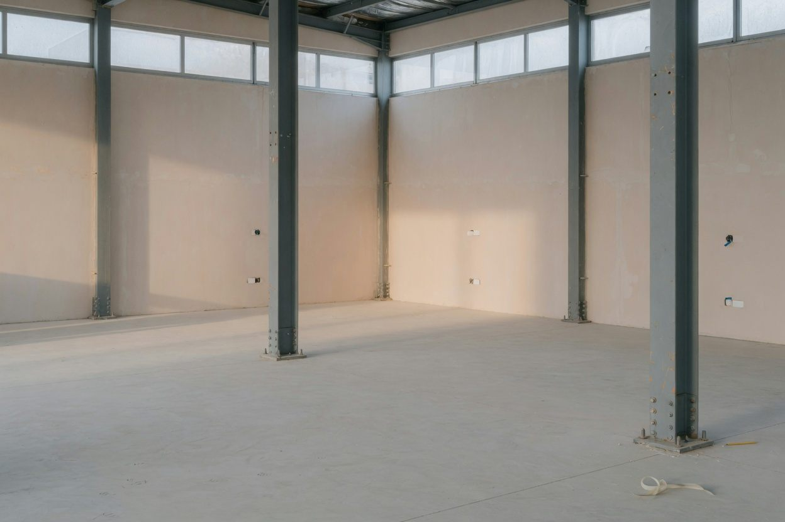

Completed Project Review
A second look after the work is done.
For a completed or closing project when you cannot reconcile the final account to the job history.

Purpose
Is the project actually closed?
Echelon does not start with a recovery number. The review starts with the records. Contract value, change activity, field evidence, billing, payments, retainage, deductions, and closeout records are compared. What reconciles is marked. What does not is marked.
Field direction, T&M tickets, correspondence, and meeting notes show the work. The contract, approved and pending changes, credits, deductions, and items still in negotiation show the commercial treatment. Pay applications, invoices, payments, retainage, backcharges, and the closeout balance show the money. A conclusion is only as strong as the records that connect them.
Each material item is classified as closed, commercially open, incomplete, or outside this review and in need of another professional.
Fit
The job does not have to be in a dispute.
- Large volume of change activity
- Different values across project and accounting records
- Aging unresolved change items
- Outstanding retainage or final balance
- Project team has moved on
- Records spread across email, spreadsheets, project-management and accounting systems
What you get
A brief on the project.
The format follows the job. Each material item has a status, a value where the records support one, the source record, the gaps, and the decision still in front of you.
Discuss a project